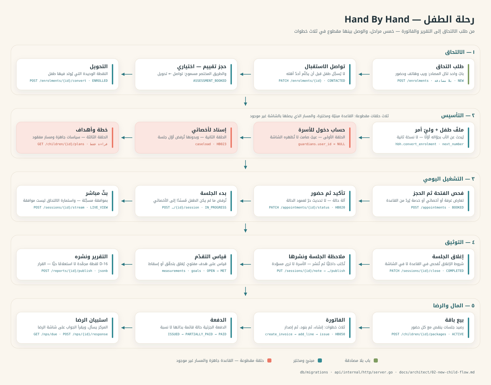

design-tokens.json عبر إضافة Tokens Studio ليصير كل لون متغيّرًا.
١ — رحلة الطفل
من طلب الالتحاق إلى التقرير والفاتورة. النسخة المرسومة يدويًّا بألوان الهوية —
flow/01-child-journey.svg

هذا المخطّط ملفّ على القرص لا نصّ داخل الصفحة، فلا زرّ نسخ له: صفحة تُفتح بـ
file:// لا يُسمح لها بقراءة ملفّ بجوارها. وأسهل من النسخ أصلًا:
اسحب flow/01-child-journey.svg من مستكشف الملفّات وأفلته على كانفاس Figma —
يستورده طبقات قابلة للتحرير. أو افتحه في تبويب، Ctrl+U، ثم انسخ النصّ.
قِيس 2026-09-19. كانت ثلاثة صناديق كوراليّة، فبقي واحد:
حساب دخول الأسرة أُغلق (0125 · 0126)، والإسناد والخطط
صار لهما مسار CRUD، والتقييم وقائمة الانتظار وحدهما ما زالا مبنيّين
في القاعدة بصفر مسار. ومرحلة «٢ — التأسيس» نفسها ستتغيّر: الهجرة 0154
(HBH-058) نزلت وتنقل ميلاد الأسرة إلى لحظة الإرسال، لكنّ مفتاحها
ENROLMENT_REQUIRE_VERIFICATION مطفأ ولا مسار يُصدر إثبات جوال —
فالمرسوم هنا هو الحيّ اليوم.
ترتيب البناء في Figma
إن كنت ستبني ملفّ التصميم من الصفر، هذا هو الترتيب الذي لا يجبرك على إعادة العمل
- المتغيّرات أوّلًا — استورد
design-tokens.json. لا تلوّن شكلًا واحدًا بلون ثابت قبل ذلك. - الخطّان — IBM Plex Sans Arabic للنصّ، Noto Kufi Arabic للعناوين. كلاهما في Figma بنفس الاسم.
- أنماط النصّ — من
web/*/src/styles/: العنوان ١٥٫٥px/٧٠٠، النصّ ١٣px، الميتا ١١px. - المكوّنات — البطاقة، الشريحة (chip)، شارة الحالة، الزرّ، الحقل، الرأس، شريط التبويبات.
- صفحة الفلو — الصق مخطّطات هذه الصفحة في صفحة مستقلّة اسمها Flow.
- الشاشات أخيرًا — واحدة لكل سطر في
screens.md، والاسم هو المسار نفسه.